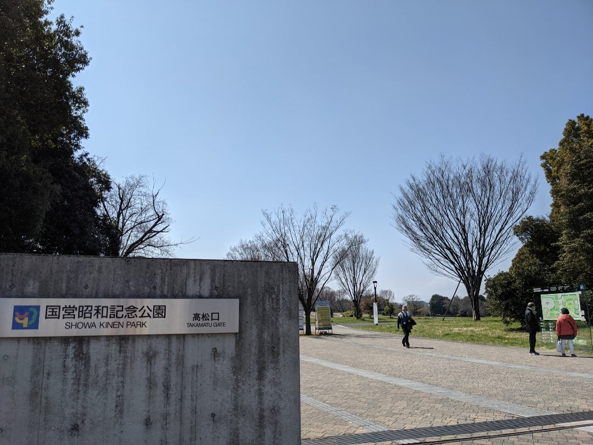

裁判闘争 その後 (2)
米軍基地返還後の土地利用
「基地拡張中止」の翌1969年
立川基地の機能を 横田基地に移すことが発表されました。
1973年1月 日米両政府は関東地域に散在する米軍基地を
横田基地に統合する計画（関東計画）に合意しました。
こうして跡地利用をめぐる協議が具体化するはずなのですが
実は1972年に 市の反対を押し切るかたちで
自衛隊が 元米軍基地内への移駐を強行していました。
従って その後の土地利用計画は
自衛隊ありきの既成事実を追認するものとして
始まらざるを得ませんでした。
元米軍基地の「三分割」案
1976年6月 当時大蔵省に設置された国有財産中央審議会が
「米軍提供財産の返還後の利用に関する 基本方針について」
という答申を発表しました。
それは 「三分割・有償処分方式」といわれましたが
変換された国有地（大蔵省が所管する公有財産）
の利用計画について 貸与も含め
以下の三種類に分けて処分するということでした。
①地元地方公共団体等による利用
②国・政府関係機関等による利用
③当分の間処分を留保（留保地）
1977年11月30日に 米軍が
立川基地からの飛行部隊の撤退を発表した後
1978年10月 大蔵省と国土庁から
「立川飛行場跡地の利用大綱案」が示されました。
その趣旨は「広域防災基地」と「大規模公園」を
二本柱とするもので 日本政府としては
できるだけ国有地としての利用をめざしたといえます。
一方 地元自治体は 「平和利用」を目指していました。
1977年 東京都・立川市・昭島市の地元3自治体は
「立川基地跡地利用計画」を発表し
「三分割・有償処分方式」への反対を明らかにしました。
自衛隊の移駐を認めず 「平和利用」を重視し
公園や大学や業務地区 住宅地区などを構想したのです。
しかし国側の「大綱案」が示されると
革新派と保守派との政治的対立のなかで崩れていき
まもなく立川市は「大綱案」を承認しました。
結局 元米軍基地だった約460ヘクタールの跡地
〔東京ドームの100倍近く、皇居の約4倍〕は
以下のように区分されることになりました。
①地元 約 219 ヘクタール
②国 約 130 ヘクタール
③留保地 約 111 ヘクタール
跡地中央部の広大な土地で
際立って大きな面積を占めるのが
国営昭和記念公園（1980年着工、1983年開園）と
陸上自衛隊立川駐屯地を含む「立川広域防災基地」です。
自衛隊は 先述のとおり返還前からすでに移駐し
1981年には新飛行場が着工
翌年には新滑走路が運用開始されました。
しかし防災基地を貫く南北道路（1978年開通）以外
「大綱案」で示された当初の施設群の建設は進まず
1989年には立川市長が
「立川防災基地の早期建設について（要請）」を
大蔵省に提出するに至りました。
やがて警察庁・警視庁・消防庁・海上保安庁など
行政施設が次々と建設され 今日の姿となっています。
国営昭和記念公園については
立川市内に住むアメリカ人研究者アダム・トンプキンスが
独特の観点を提示しています。
彼によると 「まちづくり」という日本的な概念を取り入れ
ボランテイァも参加して造園された「こもれびの丘」や
昭和初期の武蔵野の農村を蘇らせた「こもれびの里」など
人々を都市の喧噪から救い出してくれる
貴重な緑地として造成されたものです。
しかし彼が強調するのは 昭和記念公園が
複雑な昭和史の無菌化バージョンであり
米軍基地返還の重要な要因となった砂川闘争についても
一言もふれずに覆い隠しているという点です。
{kind=link}
国営昭和記念公園内の見取り図 
JR立川駅方面から昭和記念公園に入る入口のひとつ
1995年に都市計画決定された
{kind=link}
「立川基地関連地区土地区画整理事業」では
ファーレ立川北部のモノレール沿線地区の開発が行われ
国立国語研究所 国文学研究資料館 自治大学校
東京地方・家庭裁判所 立川地方合同庁舎など
国の機関等が建設されました。
1989年に多摩都市モノレールが開業し
「立川基地跡地関連地区第一種市街地再開発事業（ファーレ立川）」に代表される 立川駅周辺の
土地区画整理事業・再開発事業も 同年に決定されました。
同地区には 市立中央図書館や
女性総合センターなどが立地している他
「アートのまちづくり」として有名な事例となっています。
その他の土地は「留保地」とされていましたが
2003年6月の財政制度等審議会の答申に 基づき
財務省が基地跡地の国有地を
「原則留保、例外利用・公共用利用」から
「原則利用、計画的有効活用」に方針転換しました。そして
関係地方公共団体に利用計画の策定を要請したことにより
立川市や昭島市でも 立川基地跡地の「留保地」利用が
本格的 に開始されました。
立川・昭島両市にまたがる跡地西部は
立川分（砂川地区）に関しては 長年の懸案事項だった
若葉町からのごみ焼却場の 移転先となりました。
「元拡張予定地」のその後
1955年当時の 砂川の基地拡張反対運動に呼応して
隣接町村からも反対決議が出され
ついに都議会が 政府や外務省に
意見書を提出するまでに発展しました。
しかし この事態にあわてた調達庁は
拡張予定地内の一軒一軒を切り崩して
あらゆる策謀に出ました。
反対同盟にとっては
権力的な脅しや金銭的な懐柔との闘いも
容易ではありませんでした。
それぞれの世帯の事情もあり
早くから条件交渉に応じる人たちもいました。
長年の間に 土地を国に売って去る戸数が増え
当初130戸以上から成った反対同盟は
最後には わずか23戸にまで減りました。
拡張計画が中止されたことで 拡張予定地には
国が買収した多くの土地が 空き地となって残りました。
その後の現地での活動について
当事者である加藤克子さんによると
放置された買収地には 雑草が繁り野鼠が増殖するなど
残った農家は 様々な被害を受けたそうです。
そこで反対同盟農家は 隣接買収地の耕作を始めました。
これは全国的に 基地周辺で行われていることで
国側も暗黙の承認をしている とのことです。
砂川では 地元の有力者がブルドーザーで土地をならし
少年野球場を作ったり 老人会が中心となって
ゲートボール場が作られたりしました。
{kind=link}
「砂川中央地区多目的運動広場」の駐車場入口に掲げられた「お知らせ」には
「立川市が国から無償で借りて整備し、暫定的に広場として使用するものです」の文言
立川自衛隊監視テント村が 自主耕作をはじめたのは
1970年代の中頃でした。
ところが 1989年に
利用されていない土地への不法投棄問題をきっかけに
国は 買収地から自主耕作者を排除し
金網フェンスで囲もうとしました。
それに対して加藤さんたちは
反対署名活動を行い 防衛施設庁へ申し入れをしました。
1991年に「木を植える会」を結成し
「植樹まつり」を開催すると 防衛施設庁は
「違法行為である」との看板を立てました。
しかし同年 「自主耕作者連絡会」を結成して
市の立会いで関東財務局との団体交渉を行い
耕作の「黙認」を取りつけました。
{kind=link}
東京防衛施設局の名前で出された「国有地につき立ち入りを禁止します。
許可なくして使用した場合は 法令によって罰せられます。」との看板
{kind=link}
自主耕作者たちによって整備された土地内に掲げられた
「畑工作を続けよう」の呼びかけ
以来 「木を植える会」によって整備された空き地で
毎年「砂川秋まつり」が開催されるようになり
現在まで続いて そこは
「秋まつりひろば」と呼ばれるようになりました。
{kind=link}
アダム・トンプキンスの 昭和記念公園に関する論考と
加藤克子「今に続く砂川闘争」については
それぞれ また別な機会に詳しく紹介します。